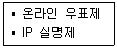

인터넷정보관리사-2급 (2013-03-14 기출문제)
1과목: 인터넷의 이해
1. 인터넷 상에서 여러 사람이 실시간 대화를 나눌 수 있는 서비스는?
- 유즈넷
- FTP
- WWW
- IRC
(정답률: 49%)

2. 인터넷 프로토콜에 대한 내용 중 가장 거리가 먼 것은?
- 인터넷의 표준 프로토콜은 TCP/IP이다.
- 인터넷의 표준 프로토콜은 컴퓨터가 정보를 주고받을 때 따라야할 통신규약이다.
- 인터넷의 표준 프로토콜은 1979년에 도입 되었다.
- TCP/IP는 빈트 서프와 로버트 칸이 처음 설계하였다.
(정답률: 61%)
3. 컴퓨터 통신망에 대한 연구를 촉진하고 신기술을 개발하기 위해 IAB에서 설립한 기구로, 인터넷에 초점을 둔 컴퓨터 통신망 연구자들의 공동체는 무엇인가?
- IETF
- IRTF
- IANA
- ISOC
(정답률: 42%)
4. 해설요구문서(RFC)에 대한 설명으로 옳은 것은?
- 컴퓨터 통신 및 인터넷과 관련된 표준 규격을 제시하는 문서이다.
- 출판된 RFC 문서는 필요에 따라 언제든지 변경이 가능하다.
- 모든 RFC 문서는 인터넷 사이트에서 검색은 가능하나 다운로드할 수 없다.
- 한글로 번역된 RFC 문서 정보는 제공되지 않고 있다.
(정답률: 75%)
5. 방송통신위원회의 홈페이지 주소로 올바른 것은?
- http://www.kcc.co.kr
- http://www.kcc.go.kr
- http://www.kcc.re.kr
- http://www.kcc.pe.kr
(정답률: 78%)
6. 국내 도메인 네임과 그 기관의 성격이 바르게 연결된 것은?
- or - 연구기관
- ne - 영리기관
- kg - 유치원
- hs - 중학교
(정답률: 64%)
7. 해외 도메인 구조에서 국가별 최상위 도메인 연결이 적합하지 않은 것은?
- ch : 중국
- uk : 영국
- de : 독일
- ca : 캐나다
(정답률: 71%)
8. IP주소 240.240.0.0은 IP클래스 분류 중 어느 클래스에 해당하는가?
- A클래스
- E클래스
- D클래스
- B클래스
(정답률: 40%)
9. IPv6에 대한 설명으로 옳지 않은 것은?
- 기존의 IPv4와 함께 동작할 수 있다.
- 실시간 멀티미디어 데이터를 처리할 수 있는 광대역폭을 가지고 있다.
- 16비트씩 6개의 부분으로 나누어져 있다.
- IP-SEC를 탑재하였다.
(정답률: 77%)
10. 전자메일의 발송을 담당하는 표준 프로토콜은?
- OUTLOOK
- SNMP
- SMTP
- FTP
(정답률: 80%)
11. 전자우편의 주소 형식과 가장 거리가 먼 것은?
- 사용자ID@호스트 도메인
- 사용자ID@도메인 네임
- 사용자ID@개인PC 이름
- 사용자ID@IP 주소
(정답률: 65%)
12. 특정 시스템에서 다른 시스템으로 파일을 복사하기 위한 파일 전송 프로토콜인 FTP의 전용 프로그램이 아닌 것은?
- PineTerm
- WS_FTP
- Ace FTP
- AL FTP
(정답률: 75%)
13. FTP관련 명령어 중 현재 디렉토리의 위치를 표시하기 위한 것은?
- pwd
- ls
- dir
- get
(정답률: 45%)
14. 다음 중 한글 뉴스그룹의 성격을 설명한 것으로 가장 알맞지 않은 것은?
- han.politics : 정치, 현안에 대한 그룹
- han.misc.jobs : 구인/구직 안내 및 정보
- han.rec.movie : 영화와 비디오 이야기
- han.comp.hangul : 사회, 종교, 문화 관련 이야기
(정답률: 79%)
15. 다음 중 유즈넷 서비스를 이용하기 위해 필요한 요소가 아닌 것은?
- NNTP
- 뉴스서버
- 뉴스리더
- IRC
(정답률: 48%)
16. 글자를 타이핑하는 시간을 줄이고 대화의 속도를 지연시키지 않기 위해 메신저 등에서 약어로 표현하는 문자를 무엇이라고 하는가?
- 이모티콘
- 두문자어
- 아바타
- 스마일리
(정답률: 73%)
17. 웹 상에서 사용하는 대부분의 메신저에서 일반적으로 제공하는 서비스가 아닌 것은?
- 메시지 보내기
- 파일 전송하기
- 메일 보내기
- 실시간 다국어 번역
(정답률: 77%)
18. 비행기, 선박, 자동차뿐만 아니라 세계 어느곳에서든지 인공위성을 이용하여 자신의 위치를 정확히 알 수 있는 시스템을 뜻하는 용어는?
- WIPI
- GPS
- CRM
- EDI
(정답률: 79%)
19. 기업과 소비자간의 전자상거래로써 사이버몰을 통한 전자 소매업을 뜻하는 것은?
- B to B
- B to C
- G to B
- G to C
(정답률: 64%)
20. 인터넷 이용자의 실명과 주민등록번호가 확인 되어야만 인터넷 온라인 게시판에 글을 올릴 수 있는 제도는?
- 공인인증서
- 인터넷 실명제
- 공인전자서명
- Opt-in
(정답률: 79%)
21. 공공기관의 개인정보보호에 관한 법률에서 개인정보파일을 보유목적외의 목적으로 이용하게 하거나 제공할 수 있는 경우가 아닌 것은?
- 정보 주체의 동의가 있거나 정보 주체에게 제공하는 경우
- 조약 기타 국제 협정의 이행을 위하여 외국정부 또는 국제기구에 제공하는 경우
- 통계 작성 및 학술 연구 등의 목적을 위해 특정 개인을 식별 가능한 형태로 제공하는 경우
- 범죄의 수사와 공소의 제기 및 유지에 필요한 경우
(정답률: 75%)
22. 본문의 내용과는 상관없는 악의적인 리플을 반복해서 달아놓는 사람을 무엇이라고 하는가?
- 스패머
- 악플러
- 크래커
- 리플러
(정답률: 61%)
23. 전자서명법에서 공인인증기관이 발급하는 공인인증서에 포함되는 내용이 아닌 것은?
- 가입자 이름
- 가입자의 주민번호
- 공인인증서의 일련번호
- 공인인증서의 유효기간
(정답률: 67%)
24. 인터넷에서 네티즌들과 대화를 할 때 사용하지 않아야 하는 것은?
- 상투어
- 이모티콘
- 명확한 언어
- 약어
(정답률: 68%)
25. 다음과 같은 제도가 만들어진 동기와 가장 관련이 깊은 것은?

- IPv6 도입
- 안전한 전자상거래
- 스팸메일
- 인증관리체계
(정답률: 40%)
26. 다음 중 올바른 네티켓이 아닌 경우는?
- 남의 의견에 대한 비난은 삼가야 한다.
- 자료를 인용할 때는 반드시 출처를 밝힌다.
- 채팅시에는 반드시 이모티콘을 사용해야 한다.
- 다른 사람의 실수를 용서한다.
(정답률: 85%)
27. 컴퓨터의 기능으로 거리가 가장 먼 것은?
- 입력기능
- 기억기능
- 연산기능
- 수동기능
(정답률: 75%)
28. 자유소프트웨어라고도 하며 지적 자산인 지식과 정보는 소수에게 독점되어서는 안되며 모두가 자유롭게 사용할 수 있어야 한다는 취지의 운동은?
- Copyright 운동
- Copyleft 운동
- Copydown 운동
- Copysoft 운동
(정답률: 37%)
29. 다음 중 바이러스에 대한 설명으로 틀린 것은?
- 바이러스는 자체 복제를 하지 못한다.
- 바이러스에 감염되면 컴퓨터의 실행속도에 영향을 미칠 수 있다.
- 다른 유저에게 파일을 전송하기 전에 바이러스 검사를 해야 한다.
- 정기적인 바이러스 검사는 필수적이다.
(정답률: 82%)
30. 중앙처리장치들이 협력하여 하나 이상의 여러작업들을 동시에 처리하는 병렬처리 방식을 뜻하는 용어는?
- 다중처리
- 분산처리
- 시분할처리
- 실시간처리
(정답률: 50%)
31. 전용선과 전송속도가 바르게 연결된 것은?
- T1 : 2.048Mbps
- E1 : 3.048Mbps
- T2 : 5.24Mbps
- T3 : 45Mbps
(정답률: 26%)
32. 전용선 접속환경 구축 시 설정할 필요가 없는 것은?
- BPS
- IP 주소
- DNS 주소
- Gateway 주소
(정답률: 53%)
33. 다음 중 케이블 TV망에 대한 설명으로 틀린 것은?
- 아날로그 전송방식이다.
- 별도의 모뎀은 전혀 필요하지 않다.
- IP 주소를 유동적으로 할당한다.
- 전화선과 별도로 사용할 수 있다.
(정답률: 50%)
2과목: 인터넷 자원 탐색
34. 정보통신망 종류 연결이 잘못 연결된 것은?
- LAN : 근거리 통신망
- VAN : 부가가치 통신망
- WAN : 도시 통신망
- ISDN : 종합정보통신망
(정답률: 66%)
35. ISDN의 채널 중 사람의 음성, 오디오, 비디오 등의 데이터를 전송하는 역할을 담당하는 것은?
- B채널
- C채널
- X채널
- Y채널
(정답률: 53%)
36. TCP/IP 프로토콜은 크게 4계층으로 구분할 수 있다. TCP와 UDP가 속한 계층은?
- 응용 계층
- 표현 계층
- 전송 계층
- 세션 계층
(정답률: 64%)
37. 1989년 CERN의 팀 버너스에 의하여 개발되었으며 멀티미디어 데이터를 웹 브라우저에서 볼 수 있도록 지원하는 하이퍼텍스트 시스템은 무엇인가?
- Internet
- USENET
- TCP/IP
- WWW
(정답률: 35%)
38. 블루투스에 대한 설명으로 틀린 것은?
- 근거리 무선통신을 위한 산업표준기술이다.
- 덴마크왕 헤럴드 블루투스에서 유래되었다.
- 무선 헤드셋, 무선 파일 전송 등 실생활에서 다양하게 사용되고 있다.
- 인공위성 자동위치 측정 시스템을 말하는 것이다.
(정답률: 72%)
39. 인터넷에 접속하기 위한 장비와 통신회선 등을 갖추어 놓고 개인이나 회사들에게 인터넷 접속 서비스, 웹 호스팅 서비스를 제공하는 곳을 뜻하는 용어는?
- ERP
- EDI
- CTI
- ISP
(정답률: 54%)
40. HTML 태그 중 참고로 하고자 하는 내용을 입력해 두는 주석문을 사용하기 위한 것은?
- <%--주석내용-->
- <*--주석내용-->
- <!--주석내용-->
- <@--주석내용-->
(정답률: 55%)
41. HTML 태그의 특징으로 옳지 않은 것은?
- 대소문자 구분이 없다.
- 대부분 < >........</ > 한 쌍으로 이루어진다.
- 큰따옴표(“ ”)는 한 단어 일때 사용하지 않아도 된다.
- 특수기호를 사용할 수 없다.
(정답률: 37%)
42. 다음 중 나모 웹 에디터, 드림위버와 가장 관련 있는 것은?
- 텍스트 기반의 웹 에디터
- 위지윅 기반의 웹 에디터
- 워드프로세서에서의 HTML 파일형식의 에디터
- 유닉스 기반의 이미지 에디터
(정답률: 67%)
43. 다음 태그 명령어 중 문단 나누기 때 사용하는 명령어는 무엇인가?
- <p>
- <ol>
- <td>
- <hr>
(정답률: 53%)
44. 특수기호를 나타내는 태그의 연결이 올바른 것은?
- > : <
- 공백 :
- < : >
- 저작권표시 : &
(정답률: 60%)
45. 다음 중 멀티미디어의 구성요소가 아닌 것은?
- 텍스트
- 이미지
- 웹브라우저
- 비디오
(정답률: 60%)
46. 멀티미디어 관련 용어 중, 자주 사용하는 다양한 그림을 모아둔 작은 그림 모음집을 뜻 하는 용어는?
- 클립아트
- 리터칭
- 랜더링
- 오버프린트
(정답률: 72%)
47. 다음 중 동영상 파일의 확장자로 틀린 것은?
- AVI
- MPEG
- WAV
- ASF
(정답률: 53%)
48. 음악이나 동영상과 같은 멀티미디어 매체들을 서버로부터 다운로드 하면서 동시에 실행하는 기술을 무엇이라 하는가?
- MIME
- QoS
- VOD
- Streaming
(정답률: 63%)
49. 웹 브라우저의 기능을 확장해 주는 외부 프로그램과 관련된 파일 형식이 올바르게 연결된 것은?
- Windows Media Player : xlsx
- Realplayer : txt
- Microsoft Powerpoint : pptx
- Acrobat reader : mpeg
(정답률: 73%)
50. 웹 브라우저에서 PDF 형식의 파일을 보기 위해 필요한 프로그램은?
- 아크로뱃 리더
- 메모장
- 에디트 플러스
- 코덱
(정답률: 65%)
51. 실시간 멀티미디어 방송을 지원하지 않는 플러그인 프로그램은?
- Real Player
- Winamp
- Add-on
- GOM Player
(정답률: 48%)
52. 플러그인에 대한 개념적 설명이 틀린 것은?
- CD 소리가 지원되지 않을 경우 음원 플러그인을 다운받아 설치하면 쉽게 해결할 수 있다.
- 웹 브라우저가 자체적으로 실행 파일을 지원하지 못할 때 필요한 프로그램이다.
- 플러그인 프로그램의 장점은 멀티미디어 요소를 제대로 작동시킬수 있게 도와준다.
- 플러그인은 인터넷 공개자료실에서 쉽게 다운로드하여 설치할 수 있다.
(정답률: 50%)
53. 인터넷에 연결된 웹서버에 저장되어 있는 하이퍼텍스트와 하이퍼미디어 정보를 불러와서 사용자의 컴퓨터 화면에 보여 주는 역할을 하는 프로그램을 무엇이라 하는가?
- 웹 미디어
- 웹 브라우저
- 웹 프로그램
- 웹 인터페이스
(정답률: 58%)
54. 인터넷 익스플로러 7.0에서 브라우저 화면에 보여지는 텍스트 크기를 지정하고자 할 때 선택해야 하는 메뉴는?
- [파일]
- [편집]
- [보기]
- [도움말]
(정답률: 63%)
55. 인터넷 익스플로러 7.0에서 사용되는 단축키의 연결이 바르게 된 것은?
- 이 페이지에서 찾기 : Shift + F
- 새로고침 : F1
- 전체화면 : F11
- 중지 : Enter
(정답률: 73%)
56. 다음 중 텍스트 기반의 웹 브라우저는?
- 삼바
- 크롬
- 핫자바
- 모자이크
(정답률: 42%)
57. 인터넷 익스플로러 7.0에서 익스플로러 버전 확인을 위해 선택해야 하는 메뉴는 무엇인가?
- [도구]
- [도움말]
- [즐겨찾기]
- [보기]
(정답률: 49%)
58. 인터넷 익스플로러 7.0의 [도구]-[인터넷옵션]의 [일반]탭에서 수행할 수 있는 작업이 아닌 것은?
- 현재 페이지를 홈 페이지로 설정
- 임시 인터넷 파일 삭제
- 열어본 페이지 목록 지우기
- 즐겨찾기 구성 설정
(정답률: 59%)
59. 인터넷 익스플로러 7.0의 단축키에 대한 설명이 바르게 짝지어 지지 않은 것은?
- Ctrl + T : 새 탭
- Ctrl + O : 열기
- Ctrl + A : 즐겨찾기 추가
- Ctrl + W : 탭 닫기
(정답률: 50%)
60. 인터넷 익스플로러 7.0에서 프레임 구조로 되어 있지 않은 웹 사이트의 절대주소를 알려보려고 한다. [보기]메뉴에서 선택해야 할 항목은?
- 즐겨찾기
- 인코딩
- 소스
- 전체화면
(정답률: 55%)
61. 인터넷 익스플로러 7.0에서 팝업 차단 기능이 있는 메뉴는?
- [파일]
- [편집]
- [도구]
- [보기]
(정답률: 54%)
62. 인터넷 익스플로러에 자주 방문하는 사이트나 데이터베이스들을 등록해 놓고, 다음에 접속할 때 해당 사이트의 URL을 몰라도 메뉴를 이용해 접속할 수 있는 기능은?
- 즐겨찾기
- 피드
- 쿠키
- 캐시
(정답률: 65%)
63. 검색엔진의 검색 결과를 평가하는 척도로서 키워드로 검색한 결과 중 유효한 정보가 차지하는 비율을 의미하는 것은?
- 복구율
- 재현율
- 정도율
- 검색율
(정답률: 44%)
64. 검색엔진의 구성 요소 중 인터넷 상에 있는 웹 사이트나 뉴스 그룹을 주기적으로 검색 후 자료를 정리하고 웹 서버에 데이터베이스를 구축하게 하는 프로그램은?
- Socket
- JAVA
- CSS
- Robot
(정답률: 66%)
65. 검색엔진의 3대 구성요소에 속하지 않는 것은?
- 로봇
- 색인기
- 검색엔진 소프트웨어
- 서버 리스트
(정답률: 57%)
66. 검색엔진 로봇으로부터의 피해를 최소화하고 무의미한 사이트에 로봇이 검색하지 않도록 하기 위해 1994년 제안된 것은?
- 로봇 배제 표준
- 메타 태그 검색 표준
- 로봇 설계 표준
- 특정 로봇 배제
(정답률: 62%)
3과목: 인터넷 윤리
67. 웹 제작자들이 위치나 빈도를 높이기 위해 한 페이지 내에 같은 키워드를 반복하여 수십개씩 입력하는 행위를 뜻하는 것은?
- 스패밍
- 빈도수
- 로케이션
- 재현율
(정답률: 44%)
68. 관심 분야의 정보를 검색하기 위해 인터넷에서 사용자가 가장 먼저 접속하는 관문, 입구의 역할을 하는 종합정보제공 사이트를 뜻하는 용어는?
- 허브 사이트
- 포털 사이트
- 멀티 사이트
- 인증 사이트
(정답률: 64%)
69. 메타 검색엔진인지 일반적인 키워드형 검색엔진에 해당하는지를 구분할 때 기준이 되는 것은?
- 검색속도
- 자체 데이터베이스의 보유 여부
- 이미지 검색기능의 제공 여부
- 지식검색 기능의 제공 여부
(정답률: 58%)
70. 정보검색 시 키워드로 사용되는 단어의 유의어, 동의어, 반의어 등을 계층적인 관계로 나타내주는 용어 사전을 무엇이라 하는가?
- 시소러스
- 불용어
- 개비지
- 빈도
(정답률: 66%)
71. 국내 검색엔진 네이버에서 제공하는 서비스가 아닌 것은?
- 블로그
- 스마트 파인더
- 미투데이
- 아고라
(정답률: 55%)
72. 자신의 홈페이지, 블로그나 카페 등을 통해 사용자 자신이 직접 제작한 콘텐츠를 업로드하여 여러 사람들과 공유할 수 있도록 하기 위한 이 용어의 이름은?
- VOD
- UCC
- DRM
- AOD
(정답률: 61%)
73. 다음 중 SK커뮤니케이션즈에서 운영하는 서비스가 아닌 것은?
- 싸이월드
- 네이트
- 한게임
- 판
(정답률: 68%)
74. Gmail, Picasa, 토크 등의 서비스를 제공하는 검색엔진은?
- 네이버
- 야후
- 익사이트
- 구글
(정답률: 80%)
75. 검색엔진 구글에 대한 설명으로 올바른 것은?
- 이미지나 문서파일 등은 검색하지 않는다.
- AND 연산자를 사용하면 특정한 단어를 배제할 수 있다.
- daily.google.com으로 접속하면 국내 주요 일간지의 기사를 검색할 수 있다.
- 검색결과에서 성인용 콘텐츠가 포함된 결과를 차단하는 Safe Search 기능을 제공한다.
(정답률: 59%)
76. 검색어 [김치]를 전방절단 검색을 이용하여 검색했을 때 나타나는 결과가 아닌 것은?
- 배추김치
- 오이김치
- 김치볶음
- 총각김치
(정답률: 83%)
77. 다음 중 효과적인 인터넷 정보검색의 방법으로 가장 올바른 것은?
- 분야별 전문 검색엔진을 사용하기 보다는 범용 검색엔진을 사용하는 것이 유리하다.
- 복잡한 검색식을 사용하는 것을 지양하고 단순한 키워드로 검색을 한다.
- 한글보다는 외국어로 검색어를 바꾸어서 검색한다.
- 1차 검색결과가 많을 경우 “결과내 재검색” 기능을 이용해 검색결과를 추린다.
(정답률: 67%)
78. 국내의 인터넷 검색엔진을 통해 검색할 수 있는 정보의 내용이 아닌 것은?
- 달러화의 환율 변동 추세
- 검색포털에 가입된 회원의 메일 내용
- 연예인의 이미지 파일
- 언론매체에 게재된 기사 내용
(정답률: 71%)
79. 정보 관리사의 역할 중 수집된 자료나 정보를 필요한 사람에게 제공해주는 역할은 무엇인가?
- 정보 비교인 역할
- 정보 중개인 역할
- 정보 상담자 역할
- 정보 분석가 역할
(정답률: 59%)
80. 정보검색 시 고려할 사항으로 가장 적절하지 않은 것은?
- 검색엔진에서 지원하는 연산자의 종류와 연산기호를 정확하게 파악한다.
- 유명하거나 인기있는 검색엔진 한가지만을 이용하여 검색해서는 올바른 정보를 찾아 낼 수 없으므로 정보의 형태에 따라 적합한 검색엔진을 선택한다.
- 리키즈(Leakage)를 최소화 할 수 있도록 검색한다.
- 개비지(Garbage)를 최대화 할 수 있도록 검색한다.
(정답률: 58%)